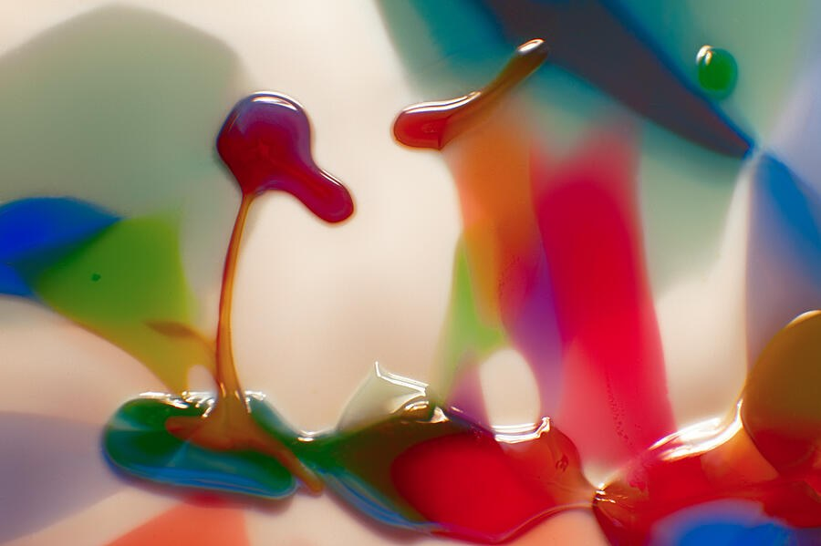

The Library · Omaste Witkowski
A Crimson Bud That Glows: Is It a Sprout or a Drip?
Crimson Bud is a glossy red and amber abstract in which one thin stalk holds up a lit-from-within bulb against a luminous cream field.

Start on the left. A thin amber stalk rises and holds a rounded, glossy crimson bulb that bends to one side. It could be a drooping bud, a sprouting seedling or a drip caught mid-fall. Sharp white highlights make it look wet and polished.
Behind it, soft bands of red and orange dissolve into a bright cream background. The light seems to pass through the shapes, so the crimson looks lit from within. You don't need an explanation to enjoy it. The color does the work.
Choose Your Print on FAAMade to order by Fine Art America · 30-day money-back guarantee
What the eye finds when it stays a while
I'll let the image tell its own story. The first thing you see is the bulb. Then you notice the curved amber-red form reaching in from the top center, as if it is leaning toward the bulb. Along the bottom edge, shiny pooled shapes spread sideways.
Then the eye settles in the calm, pale center. The saturated color gathers along the bottom and right edges and leaves that middle open, so the red and amber have room to glow.
The forms are non-representational, so the picture stays open. One person sees a seedling, another sees a drip, another sees a small figure. A tiny green droplet in the upper right corner rewards the viewer who looks all the way to the edge.
What you'll see in this piece
- A thin amber stalk with a glossy crimson bulb: an instant focal point on the left third that the eye finds right away.
- Soft backlight and a luminous cream background: the translucent shapes glow, which keeps the red looking bright and lit.
- Sharp white highlights on the edges: the shapes look wet and polished, which adds a lively, playful shine.
- Crimson, amber orange and teal green, with small touches of cobalt, chartreuse and violet: a jewel-like palette that stays warm and doesn't read as one flat red.
- Crisp foreground against a blurred background: the shallow depth of field gives the image depth and separates the shapes from the soft color bands.
- A calm pale center between a hooked curve at the top and a heavy red mass at lower right: the saturated color has space to breathe.
Where it belongs
This is a horizontal piece with a strong focal point on the left and a quiet pale center. It suits a sofa wall, a console, a desk wall or a bedroom. The red and amber edges can act as the accent color in a neutral room, while the cream background keeps the wall from feeling heavy.
The mood is playful and lively. It is a vivid, glossy study of color, and wanting it simply because it looks good is reason enough.
- This is for you if you want one confident red accent in a room of neutral walls.
- This is for you if you like glossy, jewel-like color and a bright, glowing background.
- This is for you if you enjoy an image that can be read as a bud, a sprout or a drip, depending on the day.
- This is for you if you're tired of generic red abstracts and want one with a memorable focal form.
What you get on Fine Art America
- A print of Crimson Bud, made to order by Fine Art America.
- Your choice of size, paper, canvas, metal or frame, so you can match the piece to your wall.
- Printing and shipping from Fine Art America's facility, typically within a few business days.
- A 30-day money-back guarantee from Fine Art America.
- One simple step: open the listing, pick your format and place your order.
Choose Your Print on FAAMade to order by Fine Art America · 30-day money-back guarantee
Questions before you choose
Is red too bold for my room?
Here the red is balanced by a large calm cream center and soft backgrounds, so it reads as an accent rather than a wall of color. It works especially well against neutral walls.
What is it made from, a photograph or a digital piece?
The listing describes it as an abstract macro-style image. I'd rather not claim a process I haven't confirmed on this page, so I'm letting the image speak for itself.
What if it doesn't look right once it arrives?
Fine Art America offers a 30-day money-back guarantee. You can also choose the paper, canvas, metal or frame that suits your space before you order.
Picture it above a sofa or a console: the glossy crimson bulb on its amber stalk catching the eye first, with the cream glow keeping the whole wall bright. The bulb stays the first thing you notice and the last thing you stop looking at.
When you're ready, open the Fine Art America listing and choose your print.
Choose Your Print on FAAMade to order by Fine Art America · 30-day money-back guarantee
Find your own piece with the art adventure · Ask the gallery what fits your wall